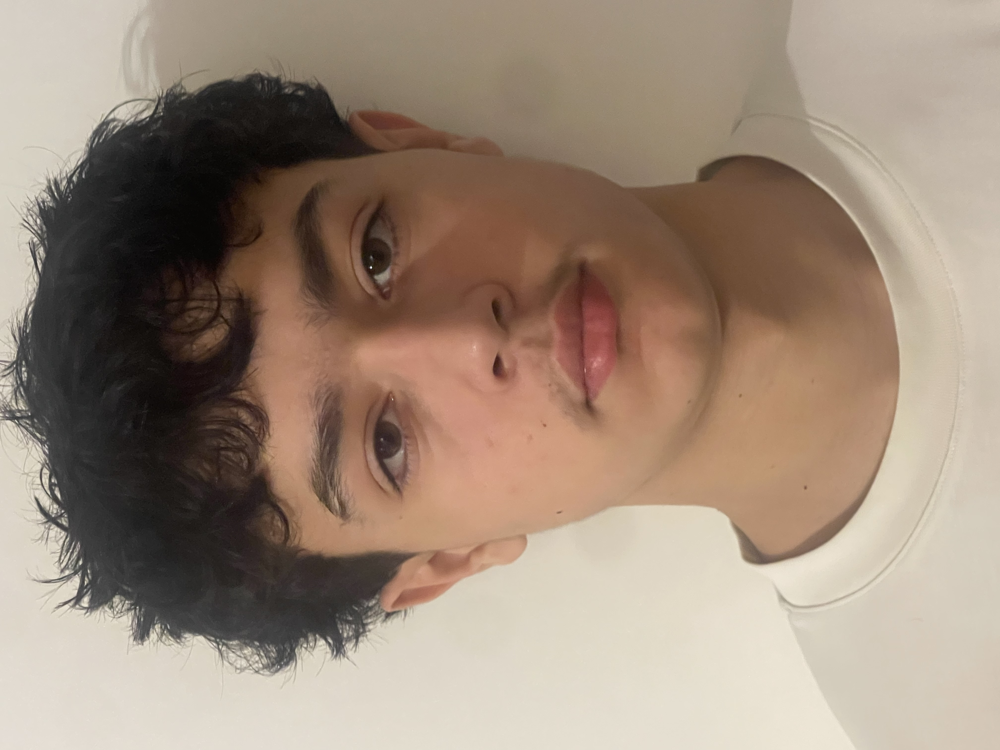

Étudiant en première année de bachelor à IPSSI
Télécharger CVÉtudiant en informatique à l’IPSSI, je développe des compétences en programmation, systèmes et technologies numériques. Sérieux, motivé et curieux, je m’investis dans des projets concrets afin de renforcer mes connaissances techniques et professionnelles. Je suis actuellement à la recherche d’un stage d’une durée minimale de 3 mois, disponible entre le 18 mai et le 4 septembre.
Dans le cadre de ma recherche de stage, je souhaite intégrer une entreprise afin de développer et renforcer mes compétences en informatique. Ce stage représente pour moi une opportunité d’apprendre, de progresser techniquement et de gagner en expérience professionnelle en participant à des projets concrets.
Étudiant en informatique, j’ai réalisé plusieurs projets académiques et personnels, dont un portfolio en ligne, un site web type Airbnb et un quiz interactif. Ces projets m’ont permis de développer mes compétences en HTML/CSS, PHP, Python et bases de données. Lors de ma formation à TEKKIE UNI, j’ai acquis les bases du développement au sein d’un petit groupe encadré par un professeur, renforçant ainsi ma logique de programmation et mon travail en équipe. Actuellement étudiant à l’IPSSI, je continue à développer mes compétences en informatique à travers des projets et des mises en pratique régulières.
N’hésitez pas à me contacter pour toute question ou opportunité de stage : Téléphone : 07 69 53 55 16 | EMAIL :a.hchikat@ecole-ipssi.net